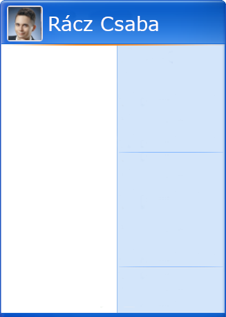

<div class="nav">
  <button (click)="starToggle()" #start [ngClass]="toggleStart?'startmenutoggled':'startmenu'"></button>
  <p>szoveg</p>
  <div class="startlight"><div class="time">{{now.toLocaleString('en-US', { hour: 'numeric', minute: "numeric" ,hour12: true })}}</div></div>
</div>
